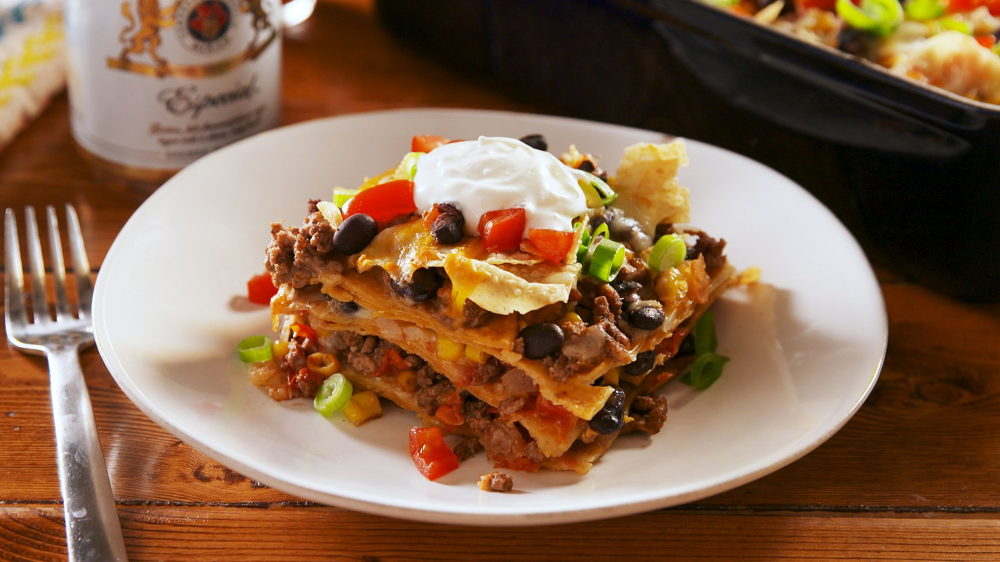

Mexican Casserole

The Mexican Casserole Recipe
The first version of a Mexican casserole seems to have been
the muk-bil (literally, “to put in the ground”). Made by the
Mayans on the Yucatan Peninsula since pre-Hispanic times, it
is the King Kong of tamales.
A Mexican casserole does not refer to a specific recipe per se,
but is a broad term that describes a type of hot dish containing
Mexican-style ingredients and flavorings. Ingredients are typically
layered or mixed together and baked in an oven. A typical Mexican
casserole may contain some combination of seasoned meat, black beans,
or refried beans and cheese, like cheddar or Monterey jack. Rice,
tortillas, or both are frequently used in between layers. Frequently,
they contain vegetables like corn and may be topped with lettuce,
sour cream, or salsa. The variations on Mexican casserole are
virtually endless.
Ingredients
- 1 pound lean ground beef
- 2 cups salsa
- 1 (16 ounce) can chili beans, drained
- 3 cups tortilla chips, crushed
- 2 cups sour cream
- 1 (2 ounce) can sliced black olives, drained
- ½ cup chopped green onion
- ½ cup chopped fresh tomato
- 2 cups shredded Cheddar cheese
Steps
- Preheat oven to 350 degrees F (175 degrees C).
- In a large skillet over medium-high heat, cook ground
beef until no longer pink. Stir in salsa, reduce heat, and
simmer 20 minutes, or until liquid is absorbed. Stir in beans,
and heat through.
- Spray a 9x13 baking dish with cooking spray. Spread crushed
tortilla chips in dish, and then spoon beef mixture over chips.
Spread sour cream over beef, and sprinkle olives, green onion,
and tomato over the sour cream. Top with Cheddar cheese.
- Bake in preheated oven for 30 minutes, or until hot and bubbly.